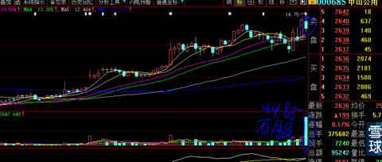
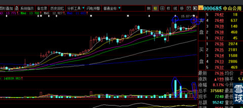
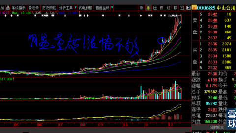

每次在我个人”雪球“栏目加入”关注“股票是很纠结的一件事情。原因呢听我一一说来。
之前写过很多专题专贴，由于都是个人操作经验与方法，即使不是误导也会因为阅读对象中总会有不能融会贯通、举一反三、画虎类猫之人用之重伤自己而删除。例如我写过一些技术和持股心得类专贴：
1、集中攻击才是散户账户快速增长不二之策(分散持股是不自信的典型特征，那是数十亿大资金不得已而为之，散户的最大长处就是一笔就建完仓，一笔就清完仓，1个亿以下资金超过2只股票，我就知道你是什么水平）；
2、主升浪总是在相对高位才会展开（睁开你们的眼睛看看就知道我在说什么，这样你就明白了为什么股票在低位那么墨迹，你持股半年，以为又如上次那样冲高会回落，结果在启动的最后卖出就大涨，就像庄家就差你那几万股似的）！
3、大股东在牛市初期为什么要减持？
4、时间与空间的关系；
5、主升浪持续时间的一般规律与涨幅空间（买是徒弟卖是师傅）
6、形态的”大“与”小“的关系与量度升幅（解决买入后的心理最低预期问题，例如我为什么敢于断言中国建筑那么大盘何以1个月时间需要涨幅50%以上）。
7、什么是合理价值（市场从来就不存在合理这一说，都是寻找自我心理按摩）？
8、什么是长线、什么是中线、什么是短线（我的结论是：所谓长中短都是胡说八道，用券商股举例好了。你即使1年前潜伏其中，不还是为最近1个月涨幅而潜伏吗？难道你1个月前进入就变成短线了？那为什么去年没有这样的一个月，前年也没有？恰好今年就有？你怎么就知道你潜伏的是鸡蛋而不是石头？）
9、趋势一旦确立，就不要关心大盘，关心的是趋势运行时间的长短（每天大盘的涨跌对个股意义完全不同）等等。
从以上题目，有相当基础的小伙伴大概能看出核心内容。对无法”启发“的小伙伴，只能缄口不言，请不要多发问。除了浪费你的时间，没有任何积极意义。
今天讲一个”在雪球”关注股票“的纠结与压力“话题，希望对你的投资起到一个重量级”捅破窗户纸“作用。
闲话少说，以下转入本帖主旨。
1、首先我们要明白一个最浅显的道理，你账户资金的增长到底与什么有关？你会说：这还用说？当然是与持有的股票涨跌有关。ok，既然你这么明白，为什么要那么纠结大盘每天的涨跌呢？大盘指数是由千万支个股涨跌加权平均值的结果，具体到个股只有其本身技术位置才引发涨跌起伏，今天（2014年12月16日）沪市大盘指数涨幅高达2.31%上涨68个点，000532力合股份一天都不受大盘控制，整个上午盘中翻绿，以下十字星收盘，前4天大盘平衡状态时它反而连续彪悍冲出K线阴阳交错的纠缠，你告诉我，是持有它呢、或者要买或者要卖呢，这三种决策到底以什么为决策依据？以上这些话是讲明一个99%参与者很搞笑的一个熟视无睹现象。阿猫阿狗都敢揣测：明天大盘会怎么样啊？我的股票是卖呀还是持有呀？
2、微观是可以预测的，宏观无法揣测，宏观恰好配合微观纯属巧合运气：这句话是我个人在市场生存的心得体会。用讲道理的方法很难说清，还是举例比较简洁。2014年11月7日晚上，我在专贴里讲：明天全仓杀入000685中山公用，理由是10月19日放出那么大量的阴线（见下图1，你设身处地的想，可怕不？）被11月7日再放量阳线所覆盖，见下图2，第二天我们在早盘的下跌中14.56元进入，理由就这么简单，说出来，新来的粉朋都很难相信。


11月24日降息刺激大盘暴涨，它冲击20.1元后却高位滞涨1周有余，我唯一的信念就是它技术上明显量度涨幅不够。事后到今天来看它股价已经达到26.46元。看到这里，手中持有力合股份股正在纠结中的你，是不是也有它”量度升幅不够“而恍然大悟？

那么大家会说，是因为大盘暴涨券商股崛起才有它的今天。我觉得你硬要怎么说，也没有关系，反正它起涨的时候，你们包括大资金，没有人知道券商股会有如此近1个月波澜壮阔的行情。我坚信中山公用没有券商大行情，必然会有水务环保（看看600008首创股份就知道我在说什么）、国有混合所有制题材（复星战略进入）等噱头也一样有今天的高度，不然11月7日我怎么会进入呢？
通过这个例子，是想讲清一个道理，大盘会不会到今天成交量创纪录的达到一天1万亿，不仅是我们，就是专家也是无法预测的。但是个股的微观变化我们却真实看到并真实参与了。大盘暴涨对我们这种股票只会起到推波助澜作用，不这样结论，就无法解释大盘平衡市甚至熊市，牛股更加多更加涨幅匪夷所思的现实存在。
3、大盘指数涨跌方式的真实意义
先写到这里，待续
 |
在雪球”关注股票“的纠结炒的是心 2014-12-15 22:00:55 |
Copyright © 1996-2014 SINA Corporation All Rights Reserved.